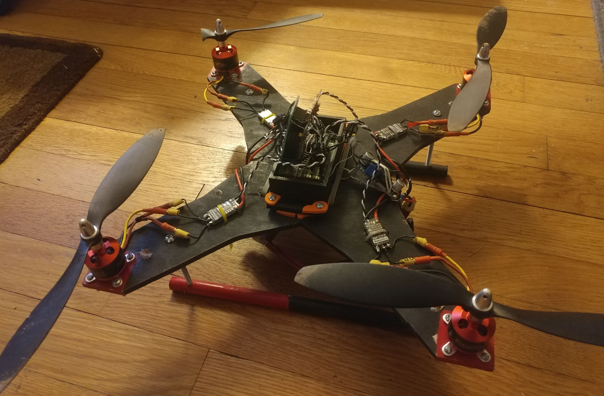

Projects listed with newest appearing higher in the page.
After being inspired by the use of control loops to control vehicles in video games I decided to build a drone almost from the ground up. With further PID tuning and adjustment of the control scheme the drone will become fully controllable. For now it is only capable of short periods of hovering.
A total of 3 arduino pro-mini boards were used, all running on 5v at 16MHz. nrf24l01 modules were chosen as they are inexpensive and highly effective. Radio communication between the controller and the flight controller required the use of a dual arduino flight controller. One arduino proccessed the SPI signals from the radio module and turned them into PWM output for the other arduino to read and mix with PID values to determine motor speeds. Yaw, pitch, and roll data were obtained using an mpu 6050 board and Jeff Rowberg's digital motion proccessing library. The flight controllers loop time would be far to high if a single arduino was tasked with both radio communcation and flight calculations. Use of pin change interrupts also allowed for efficent reading of PWM signals from the radio modules.

Radio board disconnected from main flight controller showing PWM interface pins, buck converter used to lower 12v from battery to arduino compatible 10v. Black and white wires are connections for motor controllers, the connectors are arranged like the four rotors of the drone making installation hard to mess up. All boards and sub modules were built with interchangibility in mind.

Controller circuitry mounted on failed but still useable 3d print. Left control stick has removed springs, it will retain it's position without pressure being applied.
PID systems were first used for automatic steering of ships and are still used today. The three elements of a PID controller are propotional, integral, and derivative. Proportional correction is based on how much error in the system there is at the current time, so if the drone wishes to be level with the horizon but it is currently perpendicular to the horizon the proportional controller will respond with very strong output. The integral element of a PID loop is responsible for long term corrections such as a video camera on one side of the drone causing a slight imbalance of weight. By integrating the error(how many degrees are we from being level with the horizon) the drone can "learn" that it has a weight stuck to its side and will adjust its motor speeds to compensate. The derivative element takes the derivative of the error and uses it to create control output, if the derivative element of a PID loop is very high the controlled variable will be very difficult to change. This is because derivative of error is the rate of change of error, the derivative controller wants the rate of change of the error to be zero. In terms of a drone the error is the angular position, the derivative of position is velocity, therefore in a drone the derivative controller trys to minimize the speed of rotation the drone experiences.Each of these control elements has a tuning parameter that effects the elements power to effect the system. If these tuning parameters are set perfectly the drone should be almost perfectly stable in flight. In reality it takes alot of analysis and tuning to get a set of three parameters that give the drone ease of control and stability. This is why in the below video you can see the drone never fully compensates for imbalance and drifts heavily in the x and z directions. If the parameters were tuned correctly the drone should be able to hover in place with little change in position. The PID system was implemented using the C++ programming language in the arduino development environment.
Not perfect but stable tuning.
So far this project has been a great learning experience, with a broad range of applied technology topics covered. The physical parts of the drone allowed me to further my skills in wood working, CAD, and use of a 3d printer. After making many different circuit boards for different integrated circuit configurations I have spent hours doing through hole soldering, I can remember how much I struggled to make simple connections and joints at first. Now I can consistently make great solder joints using leaded or non leaded solder. The programming and interfacing of arduinos and other integrated ciruits has given me insights into I2c and SPI communications as well as an understanding of pulse width modulation signals. PWM signals played a large role in the project, along with interfacing between two arduino boards PWM also enabled use of an arduino board to controller the motor's of the drone. The most valuable lesson I learned while building my quadcopter was a very strong understanding of control theory and the math behind it. Before the project I did not even understand what derivatives and integrals are. After I have a full understanding of both and how they effect an open loop system.
From 2018-2019 I took the AP Java class available at my high school. As a final project after we had learned all required material advanced students were assigned to create a version of planning poker(Used by company teams to determine the complexity of a proposed task) in Java that allowed players to connect to games over LAN and WAN. I created three different classes to complete the assignment. A Java awt GUI application for players, a GUI application to create a server/game session, and a command line application to create a server/game session. Communication between client and server was done using a TCP socket, which needs to be forwarded on the server machine for WAN game sessions. Strings of bytes are sent between applications to allow player chat, game mechanics, and administration to work. Numeric values sent between machines were only as large as 100 meaning a single byte would be used. Chat messages are variable length making the amount of data sent proportional to the length of the message(Without lossless compression). Being my first awt GUI project the way I wrote a GUI that works, but is not beautiful. Loops are used to create interface objects that are repetitive such as buttons in a row. The github can be found here
The project was finnished and worked with an overseas portforwarded connection, below are pictures of the UI which I did not spend much time on.

I have been using C++ to program Arduino boards since the 7th grade, I got more serious about using compiled language for high computation projects and decided to dive deeper into C++ as I was already somewhat familiar with it.
I decided I wanted to learn to do computing on GPU and found a powerpoint that introduces the basics of OpenGL compute shaders. This project is in progress, currently rendering one million grains of sand and using Euler's method to simulate gravity. Currently I am implementing GPU radix sort to make collision detection sub O(n*n) to allow atleast 50,000 grain simulation with collision, hopefully one million in real time. Currently my parallel sorting is too slow but does work, in the below video particles are colored based off their index in a sorted array sorted by the Y axis.
Update, Finished: I implemented radix sorting of particles by position in order to increase compute speed but realized the problem still remains n*n difficulty relative to particle count. Instead i used spacial hashing and sphere packing math to design a 3d spatial hashing function and accompanying data structure that groups particles in the same 3d cubes into the same part of an array which allows the computation time to grow with particle count and the size of the confining area. With this algorithm 50,000 particles can be simulated at approximately 40 frames per second on a GTX 1070 GPU. With further optimization of spatial hashing size(how big are boxes that categorize the balls for collision detection) the speed of the simulation could potentially be increased with a trade off of more memory usage. The simulation can be used with varying levels of particle-particle friction and particle-wall friction to simulate different phenomenon, for the demo I chose to simulate pouring sand grains and an ideal gas. The video below shows both of these demos.
Ideal gas simulation with the program
I wanted to learn more about the low level often obscured parts of computer security, so I implemented the Blowfish cipher to use to hash passwords. These algorithms are useful for databases where passwords are stored but storing passwords in plaintext is not safe. I generated the salt for the hash using a 32bit seed for the Fibonacci sequence.
Youtube Demo GithubThis project came out of previous gravity simulations and reading about the n-body problem using a provided graphics library I tested my C++ and physics knowledge by using Euler's method to approximate the movement of the bodys and conservation of momentum to make collisions appear as if they were complete absorbtions(inelastic). This projects basically brought the projectile motion and gravity simulator together but in C++ for faster speed.
Youtube demo without conservation of momentum Youtube demo with conservation of momentum GithubI wanted to make sure I really understood linked lists, and realized snake is a perfect game that can showcase an advantage of linked lists, why shift an array when you can just cut off the tail and paste it as the new head. No loop counters were used to implement any part of the game(graphical display is the exception).
Github Youtube Demo Arduino Youtube Demo Graphics Youtube Demo ConsoleFor the past five years I have been creating online demos of math concepts using Javascript control of an HTML canvas. These projects have helped me learn and cement understanding of math in the cartesian space.
Realizing the signifigance of the Fourier transform to real problems I became interested in implementing it myself, a discrete integral calculation is nothing more than a weighted sum so implementing it was easy.The application of the transform can be seen when used to filter or highlight specific parts of a signal which can be useful in many places, one that is immidiately obvious is filtering out vibrations in gyroscope data on a drone leading to greater stability.
Fourier Transform InteractiveAfter doing basic projectile motion in algebra class I was inspired to create a more complex and applicable model. In class we had assumed no drag forces and only acceleration due to gravity. I intended to calculate for drag force. At first I thought that a simple function could be used to derive the coordinates of a launched projectile. After doing some math on paper using newtons laws and the drag equation I realised that building said simulation would be more challengeing. Since acceleration is linked to velocity, velocity is linked to drag, and drag is linked to acceleration a circular dependance is present. This means only approximations using infinitecimals can be used to find the approximate position of the object as it flys through the air. By calculating new velocitys and forces every delta seconds an approximation of the objects position can be made, the smaller the time between calculations the more accurate the approximation.
Projectile Physics SimulationThis project was a precursor to the one listed above. About a year and a half earlyer I became interested in the math behind Newtonian Physics. Using the inverse square law and the same simulation on a small time scale to approximate positions of two objects I built two different web apps. Both had the same physics engine, but one employed png textureing to give a more dramatic effect. The physics engine keeps track of the object's mass, velocity, and distance from the other object to calculate the movements of the two objects towards each other due to gravity.
Gravity Animation Gravity SimulatorMy first interesting HTML/Javascript project. In my middle school geometry class we would used Pi alot, finding the radius or circumfrence of a circle. Being such a prominent value I was confused I did not have any understanding of how to calculate Pi. After doing research online I found a site about Archimede's methods of calcualting Pi by measuring an infinite sided polygon inscribed inside or outside of a circle. Using the sine and cosine functions and HTML canvas functionality I built a web app that will draw a polygon and give an estimate for Pi based off of said polygon. The more sides the polygon has the larger the amount of sides the more precise you get.
Archimede's Pi